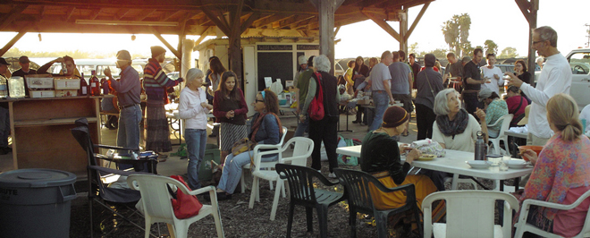

Caption #1

Caption #2
GROW FOOD and teach others who want to grow their own food.
EDUCATE AND TRAIN the next generation of local farmers and gardeners though classes, workshops and training.

PROMOTE COMMUNITY as an effective means to change to a healthier, locally based food system.

So, how does $10 help our farm grow food, farmers, and community?

Each weekly or bi-weekly Share includes a seasonal selection of farm-fresh vegetables with occasional fruits, cut flowers, and herbs -- the equivalent of about one grocery bag full of just-harvested produce.

Often the best way to learn is by doing, and you'll get a taste of the myriad things a farmer does while preparing and growing San Diego seasonal plantings of vegetables, greens, medicinal and culinary herbs and cover crops.
Come join us at the farmers market on Thursdays from 3pm to 7pm. Feed your family produce right from the farm!
Our farm is all about community, so what better way to say that than by hosting a monthly community gathering? On third Saturdays each month from March through October, we host volunteer opportunities, tours, a grand potluck meal, and bonfire.
Come celebrate our Sixth Birthday fundraising event for AGRICULTURE • EDUCATION • COMMUNITY @ Wild Willow Farm & Education Center
This is a 6-week course and begins July 4!
6-week session begins July 23
 Wild Willow Farm & Education Center is a six-acre working farm located in the southwest corner of
the United States, less than three miles from the Pacific Ocean and two-thirds mile north of the Mexican
Border. The farm is nestled along the banks of the scenic Tijuana River, and borders the river's
stunningly beautiful estuary nature preserve. We're a 15-minute drive from downtown San Diego, with easy
and quick access from most of urban south San Diego County.
Wild Willow Farm & Education Center is a six-acre working farm located in the southwest corner of
the United States, less than three miles from the Pacific Ocean and two-thirds mile north of the Mexican
Border. The farm is nestled along the banks of the scenic Tijuana River, and borders the river's
stunningly beautiful estuary nature preserve. We're a 15-minute drive from downtown San Diego, with easy
and quick access from most of urban south San Diego County.